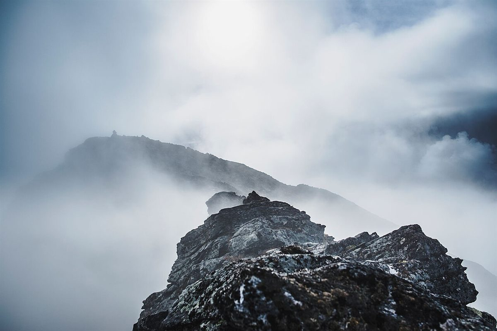
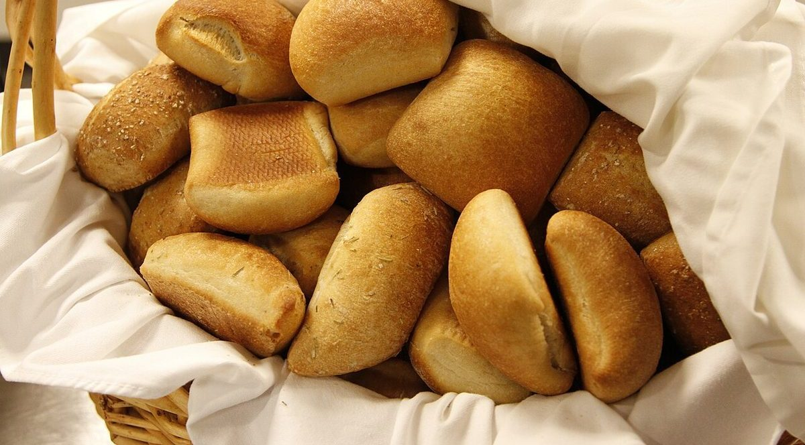
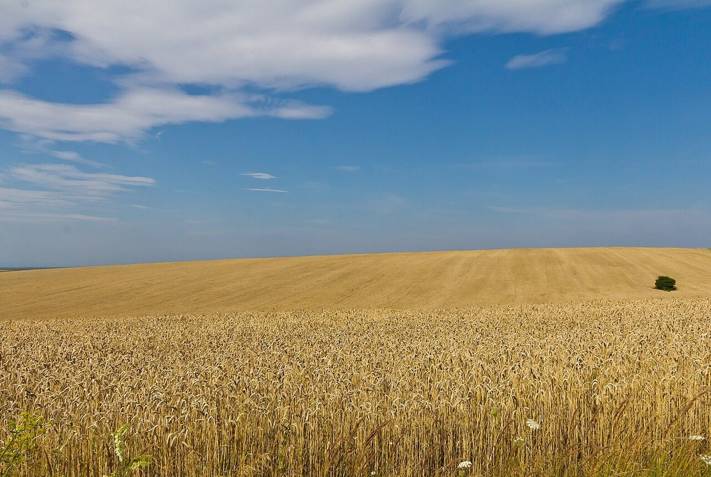

店のこと
店のこと
お店について確認できているのは、所在地とInstagramのアカウントだけです。
このページの「想像してみる」部分は、制作側が想像して書いたものです。お店の実際の様子・考え・商品とは関係がありません。
確認できていること
- 店名は「mountain mountain」、業種はパン屋
- 所在地は長崎県対馬市厳原町日吉292-6(〒817-0012)
- 電話番号はなし。連絡はInstagramから
- 営業時間・定休日・メニュー・価格・ご予約・駐車場は準備中

想像してみる
山をふたつ、重ねて「出」
由来は分かりません。制作側は、パンを窯から出す瞬間や、朝いちばんに店を開ける「出」の字を重ねて想像しました。一日のはじまりにパンを選びに行く。そんな朝を思い浮かべています(実際のお店の姿ではありません)。
ふたつの山
遠い山と、近い山。
どちらも国外・撮影地不明のフリー素材で、対馬やお店の写真ではありません。
遠い山



近い山



島のこと
対馬について
対馬は長崎県に属する離島で、山がちな島として知られているとされます。ただし、お店が島の山や自然と関係しているかどうかは分かりません。